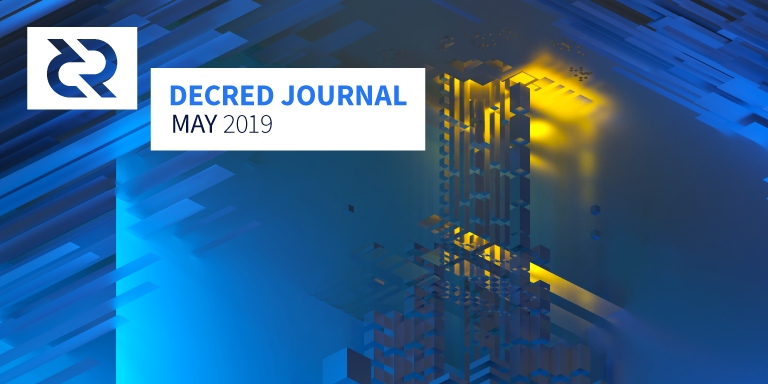

Decred月报 - 2019年5月

五月重点:
- DCP4已激活。Decred的主网现在已经为闪电网络做好了准备。
- iOS钱包的第一个候选版本进入公开测试。
- 3个社区基金资助的提案（Ditto、Research和Bounty）的第一阶段即将结束并且已经为Ditto和研究计划开放了进一步资助的提案。5月份共提交了6项提案，其中4项于6月初开启投票。
- Decred Assembly and Decred in Depth播客完成了早期制作并发布了第一集。Decred Distributed视频的嘉宾是@elian，他在5月的晚些时候继续在哥伦比亚和乌拉圭的7天内展开了3个活动并详细描述了他在每个活动中的经历。
开发进展总结
dcrd: 修复了bug，改进了测试覆盖率和测试基础架构。
工作开始从上游btcd 移植几个重新安排，以减少耦合和拆分blockmanager和rpcserver到他们自己的包。
另一个活跃的领域是挖矿代码，该代码正在进行一系列代码改进和性能优化，例如删除getblocktemplate并需要有效的模板地址。
需要特别提及的挖矿代码的一个重大未决变化是大修后台模板生成器（矿工调用以接收模板以创建块的功能）。目前，不熟悉Decred投票错综复杂的矿工偶尔会产生最少3个PoS投票的有效区块，这可能是5个。这对于PoW矿工来说是不利的，他们因包括更少的投票而获得减少的补贴。对于PoS选民而言，这也是不可取的，尽管他们投票，但由于传播延迟，他们可能不会收到PoS奖励。为了解决这个问题，后台模板生成器已经更新，以增加对智能投票传播的支持，以及许多其他功能，例如更好地处理链重组到替代块，为矿工提供模板更新流的订阅，并且考虑同步状态作为确定链是否是当前的一部分。应该注意的是，这项工作仅实现了基础结构，并且尚未在生产中公开此功能。
dcrwallet: 修复了bug，改进了错误处理，简化了并发代码，增加了未锁定钱包的并发使用率。CleanOutAccount功能开始工作，类似于SweepAccount但允许多个事务。
Decrediton: 响应式设计的工作继续使用新响应的事务/历史记录视图。最初的闪电网络钱包 集成工作仍在继续。
Politeia: 前端更改包括改进的提案列表视图，滚动时连续加载提案，以及会话到期时不再重定向 - 现在将弹出登录模式窗口。后端看到了性能改进和错误修复，用户数据库的更改（静态用户数据现在已加密），以及允许非管理员通过公钥查找用户ID /用户名的更新API端点。这些查找将允许按用户帐户而不是公钥来组织有关用户评论和投票的数据。
承包商管理系统（CMS）继续得到稳定的改进和修复。
dcrlnd: 适用于Decred主网的闪电网络工作还在进行中，修复了bug，改进了集成测试，增加了测试覆盖率，并删除了未使用的代码。
工作已经开始降低耦合与dcrwallet和港口码头工人有关的LND文件dcrlnd使能由社区更容易修补和发展。一个快速入门指南已经开始为那些希望得到应该更快知情人士。工作也已开始端口很多上游变化作出lnd因为dcrlnd分支开始初始端口。
dcrnd已经在实验的基础上被添加到Bug Bounty Program中，并附有 警告.。
dcrandroid: 小错误修复和UI优化，以及新增的发送和估计功能。代码已更新为与最新的dcrlibwallet兼容- 这是dcrandroid，dcrios和godcr.重用的共享组件。
dcrios: Release Candidate 1 of the iOS Wallet is ready for broader public testing. Development efforts ramped up in preparation for official launch. Bugs reported by users of the test app have been fixed, UI improvements have been made, and a large refactoring was performed to clean up the repository and improve test coverage. Apple Store release is imminent!
dcrdata: A markets dashboard has been added to the alpha site with most relevant market information, such as: USD and BTC price and volume from top Decred markets, indexes of BTC/USD price, charts of order book depth, volume and market history.
docs: Added new Security page that captures a lot of wisdom about secure computing, including system setup and OPSEC. The Transaction Details page was updated to include more information on Decred-specific transaction types, as well as a detailed example transaction. The Consensus Vote Archive page now has better flow and more data.
decred.org: Updated the Roadmap page, minor content and UI fixes.
Other:
- dcrstakepool (VSP software) received a redesign.
- dcrd successfully synced on RISC-V QEMU. RISC-V is a hope for a less horrible CPU architecture.
Dev activity stats for May: 88 active PRs, 272 master commits, 52K added and 57K deleted lines spread across 15 repositories. Contributions came from 2-7 developers per repository.
People
Welcome to new first time contributors with code merged to master branches: duyenemdo (dcrandroid), njirap (dcrdata), Nelson Dornelas Jr (politeiagui) and Youssef Boukenken (dcrtime).
Governance
In May the Treasury received 15,616 DCR and spent 8,456 DCR. Using May's daily average DCR/USD rate of $27.71, this is $433K received and $234K spent. As these payments were for work completed in April, it is also informative to consider them in the context of the April average daily rate of $24.22 - in which case the USD received/spent figures are $378K/$205K. As of Jun 1, Treasury balance is 613,840 DCR (17.3 million USD at $28.19).
Below is the proposal status as of Jun 1.
6 new proposals were submitted:
-
Block Header Commitments Consensus Change by @davecgh, a proposal to move forward with a DCP and on chain consensus rules change. This change would allow to bring the security of SPV clients almost to the level of fully validating nodes. The proposal projects a cost of $20,000 to prepare the software and the DCP, to be paid from the core development budget.
-
Ditto Communications Proposal for Decred: Phase 2 by @lizbagot, a proposal to continue retaining the services of Ditto at $25K/month in DCR for a further 6 months. The proposal includes a recap of the last 6 months and details a 5 pronged approach for the next 6 months.
-
Decred Open Source Research proposal: Phase 2 by @richard-red, a proposal to continue funding the research program with $20,000, estimated to keep it going for 6 months. The proposal includes a report on the first 6 months activities, and a description of how the approach going forward will differ. The proposal also invites ideas about research projects in comments.
-
Decentralized Exchange Specification Document by @jy-p, a proposal to move forward with the DEX by producing a "full RFC-style specification" of the processes involved. The specification would be completed by Company 0 working with @chappjc, @buck54321 and @jholdstock, at a cost of up to $20,000.
-
Incentivizing BD Evangelists within the Decred Ecosystem by @betterfuture, a proposal to establish a "Decred Evangelists" business development team that would arrange co-development deals with partner organizations, and be rewarded with a percentage of any DCR contributed by those partners to the Treasury. The proposal was edited by @betterfuture on May 31 to say that it will be abandoned and re-submitted as two separate proposals, based on community feedback.
-
A Journey to the Future of Work- Telling the DCR story through Politeia by @jer979, a proposal to write an article about Politeia and the author's proposal submission journey. This proposal initially appeared to have good support, but after comments about @jer979's past relationship with IOTA lost some of that support and was ultimately rejected with 48.6% approval (and voter participation of 44%, the second highest participation rate in Politeia's history).
While the proposal was rejected, @jer979 still published his journey on his website. In the article, he argued that "Contributor Experience" (CX) is important and compared proposal submission experience of DAOstack and Decred, outlining some friction points. Following an exchange on Twitter, @lukebp captured the feedback in a GitHub issue.
1 additional proposal finished voting and was approved:
- Decentralize Treasury Spending by @moo31337, proposed a method of decentralizing Treasury spending with a monthly on chain vote to approve payments to contractors. It was approved with 97.5% Yes votes and participation of 22.5% tickets.
The first constitution amendment has been applied on docs.decred.org.
@degeri published a Bounty program status update on May 15, reporting that 49 submissions had been processed so far with 7 eligible for a payout.
Politeia Digest has more in depth coverage of these proposals and associated developments, see issue 15 and issue 16 that were released in May.
@pi_crumbs continues tweeting when new proposals are published, edited or start voting.
Network
Hashrate: May's hashrate opened at ~524 Ph/s and closed ~574 Ph/s, bottoming at 364 Ph/s and peaking at 626 Ph/s throughout the month. Pool hashrate distribution as of Jun 1: Poolin 20%, lab.antpool.com 18%, BTC.com 8.7%, F2Pool 7.7%, UUPool 7.7%, Luxor 2%, BeePool 0.86%, CoinMine 0.28%, suprnova 0.02% and others 35.4% per dcrstats.com. Pool distribution numbers are approximate and cannot be accurately determined.
Staking: 30-day average ticket price was 116 DCR (-1.2) per dcrstats.com. The price varied between 109.7-124.7 DCR. Locked amount was 4.68-4.83 million DCR, which corresponded to 47.60-49.17% of the available supply per dcr.farm.
Nodes: as of Jun 2 there were 270 public nodes. In that snapshot, 168 nodes were IPv4 with the following continent distribution: Europe 53%, North America 39%, Asia 7%. Top countries: USA 31.6%, Germany 14%, France 10%, Canada 7.8%, UK 5.4%, Netherlands 5.4%. Thanks to @chappjc for the snapshot.
Another useful source of node stats is dcr.farm. Throughout May it shows a large variation in the count of v1.4.0 nodes (103-237), but it has a nice chart of node version history that gives a general idea that the network is mostly on v1.4.0+ now.
The source we were using for node stats previously (dcred.eu) was shut down. We are thankful for all of the information it served to be recorded in the Journal, and sorry to see it go. A feature request to add similar stats to dcrdata is discussed here.
Soon after the activation of the new consensus rules, there was a transaction that made use of the new rules. The nodes that did not recognize this transaction as valid got forked off the network and stuck on block 342,913. We had a steady stream of people dropping by on the support channels throughout the month as many of their wallets stopped syncing. There was no major network level outage observed.
Mining
Mining pool ViaBTC announced that they now support Decred mining.
Integrations
HitBTC exchange added DCR/BTC, DCR/ETH and DCR/USDT pairs.
Nomiddleman Crypto added Decred support to their WooCommerce plugin that allows to accept crypto payments to merchant's own wallet addresses without involving third parties. Source code is available on GitHub.
Ownbit (formerly BitBill) added DCR support in their cold wallet.
Warning: the authors of Decred Journal have no idea about the trustworthiness of any of the services above. Please do your own research before trusting your personal information or assets to any entity.
Adoption
Trippki.com announced DCR support in their hotel booking service.
ADHOC, a company that focuses on ethical and privacy-respecting hardware and software announced that they accept DCR as a payment method. As of writing, ADHOC sells refurbished Samsung Galaxy S2 and S3 with software for private communications and Replicant OS (fully free Android distribution that once featured on fsf.org for finding a backdoor in a Samsung phone), Librebooted ThinkPad X220 with Tails, and a ebook reader. The products are mirrored on OpenBazaar store.
Cryptwerk.com directory collected a list of businesses accepting DCR.
Outreach
Decred was busy in May laying the groundwork for a more decentralized operational rollout. Much of the work in May was focused in and around NYC Blockchain Week, where approximately fifteen community members got together with an extended group of exchanges, miners, institutional partners, and more. Decred Africa Telegram group was launched and coordinated a presentation at Blockchain Nigeria is Lagos on May 24. In NYC, various community members attended the Magical Crypto Conference on May 10-11, then Consensus the following three days. At Consensus, @jy-p presented a 30 minute update on Decred's funding and roadmap as part of their Changelogs track. Additionally, @jy-p spoke later that day at Ditto PR & The Block's first ever conference, Atomic Swap. @jy-p was on a panel with Beam, Dash and Orbs representatives, and the discussion focused on decentralization and governance. Decred coordinated a dinner with members of its Asian community and formulated a strategy to penetrate the Asian market, prioritizing China in the immediate term. @Dominic and @changhugo are planning an event to host and promote a meetup in Beijing in the near future, and Decred is working on a plan to host an event in Signapore, potentially in September.
@anshawblack traveled to New York for NYC Blockchain week and recorded podcasts with @jz, @MustStopMurad, Joel Monegro, @lukebp, @jholdstock, and Permabull Nino. The first podcast with @jz was released, with others to follow every two weeks.
@Dustorf released the first part of the Decred Assembly, a segment titled Decred Distributed that looks at places around the world and talks with local community organizers to understand what Decred is doing in those areas. The first edition featured @elian, who is leading efforts in Mexico and doing a lot of great work in Latin America. In early June, additional segments will be released, including an in-depth discussion with @jy-p about the DEX proposal.
Ditto's May achievements:
- Ditto and The Block hosted Atomic Swap, an invite-only event during Blockchain Week NYC attended by 150 crypto influencers, media, investors, and enthusiasts, and sponsored by Decred. The Block published a story prior to the event.
- @jy-p spoke on "The Idealist's Dilemma" panel at Atomic Swap, where he debated what it means to be a decentralized protocol alongside Beam, Dash, and Orbs.
- Reporters from top-tier media such as Bloomberg, The Block, Bitcoin Magazine, Fortune and other outlets attended Atomic Swap. Team Ditto was also able to meet several Decred community members in person there, including @akinsawyerr, @anshawblack, @jholdstock, @lukebp, @jy-p, @jz, @Dustorf.
- @liz_bagot and @treydpr from Ditto answered the community's questions on a Reddit AMA and livestreamed video on YouTube.
- @jy-p and @MustStopMurad met with reporters from BTC Manager, The Information, and Bitcoin Magazine during Blockchain Week NYC.
- @jy-p was quoted about Facebook getting into crypto in Crowdfund Insider, Live Bitcoin News, and The Daily Hodl.
- @moo31337 spoke with host Matthew Aaron on the Crypto 101 podcast. Starts at 17:32.
- @MustStopMurad appeared on Cheddar TV, where he mentions Decred at 2:07.
- Mention of Decred in BTCManager from after Blockchain Week meeting.
- The Information quoted @jy-p in a story about the launch of Spedn.
- @MustStopMurad was quoted in Forbes and mentions Decred: "While Bitcoin has been outperforming altcoins since April, I think altcoins which have tracked BTC movements most closely are the ones being accumulated by 'Smart money' investors and VCs: coins like Decred, Tezos, and Monero.".
- Secured a speaking slot for @jy-p about decentralization and Decred's funding mechanism at the Voice of Blockchain, an event that will take place in Chicago this fall.
- Worked with the community to finalize a byline on Decred's approach to staking.
- Submitted PR proposal to Politeia for next six months funding.
Events
Attended:
- May 4-5 - VII Bitconf - São Paulo, Brazil. Decred was well represented at this event with around 1,200 participants.
- May 7 - ThatCrypto Meetup - Toronto, Canada. @michae2xl and @zubair presented Decred. (video)
- May 13 - Consensus 2019 - New York, USA. @jy-p presented a Decred Roadmap update, featuring details on funding and development. (video)
- May 15 - Atomic Swap - New York, USA. Decred co-sponsored the Atomic Swap event organized by The Block. @jy-p spoke on a panel about "The Idealist's Dilemma".
- May 17 - Global Blockchain Forum - Hangzhou, China. @Dominic presented Decred.
- May 18 - Chengdu, China. @Dominic represented Decred at an event with a lot of miners present.
- May 18-19 - CriptoLatinFest - Bogotá, Colombia. @elian presented Decred at this event with around 300 attendees. The event attracted attendees who were more interested in speculation than the fundamentals of the technology. (report)
- May 20-21 - La Conexión - Medellín, Colombia. @elian presented Decred at this event with around 200 attendees, an international mixture of investors, entrepreneurs and cryptocurrency professionals. This event attracted people who were interested in understanding how blockchain technology works and building it into their business. (report)
- May 23 - Decred AMA - online. This AMA was organized by Cobo Wallet and @Dominic answered questions. The AMA led 300 people to join the Decred Chinese Telegram channel.
- May 24 - Bitcoinday - Montevideo, Uruguay. The event had around 200 attendees and @elian represented Decred on a panel on blockchain and business, and also ran a workshop about dcrtime and Politeia attended by around 20 people. (report)
- May 24-25 - Blockchain Nigeria Group - Lagos, Nigeria. @collins and some other Raedah Group developers represented Decred at the event and delivered a presentation.
- May 28 - Gophers Silesia - Katowice, Poland. @kozel delivered a talk about Decred which has been recorded, video to come.
Upcoming:
- Jun 12 - Meetup - Washington DC, USA. Join Decred, The Dartmouth Entrepreneurial Network of DC, and TechSpace for an evening of conversations and an overview of Decred: A Decentralized Autonomous Entity. Tickets are free but limited, available here. Organized by @akinsawyerr.
- Jun 18 - TF Blockchain - Portland, USA. @raedah will represent Decred.
- Jun 19-23 - Campus Party - Brasília, Brazil. Decred team will be presenting 2 lectures on the main stages and around 4 or 5 in our arena. The Brazilian community will be sponsoring a CTF (Capture the Flag) championship with Decred awards. The event runs 24 hours a day. There will be about 60,000 participants and 6,000 camped.
- Jul 1-2 - Wharton Roundtable on Cryptogovernance - San Francisco, USA. The Zicklin Center for Business Ethics Research at the Wharton School of the University of Pennsylvania is launching a new initiative on the governance of blockchain-related projects, platforms, and consortia. Initial meeting will take place at Wharton San Francisco for approximately 25 highly-esteemed experts, representing a wide variety of perspectives and backgrounds. @akinsawyerr will be attending on behalf of Decred.
Events repository was re-published under decredcommunity GitHub organization with 10 past reports polished and extended with links to photos and videos. Event attendees are encouraged to submit event reports to share experience with other Decred representatives and the wider community about cryptocurrency situation in various locations.
Media
@jy-p participated in an AMA on the /r/cryptocurrency subreddit, answering 18 questions.
Selected articles:
- How I Make a Living in the Crypto Gig Economy by @s_ben (medium)
- The Basics of Blockchain Governance by @Haon (medium)
- Decred as DAE Infrastructure provider by @neil_nie (dcrclub), translated to English by @changhugo (medium)
- Comparing Double Spend Resistance: Decred VS Bitcoin - Part 1 by @Fiach_Dubh (medium)
- Bitcoin: an Accounting Revolution by Permabull Nino (medium) - not Decred related
- The community of Decred is present around the world by @Haon (medium)
- Decred Governance: An Iterative Approach by @max_bronstein (medium)
- Decred Price Analysis: Emergence as a digital store of value (bravenewcoin.com)
Translations:
- All issues of the Journal have been translated to Vietnamese by @duyenemdo - sponsored by Raedah Group. Since last mention in March the translations have been extended further into the Journal's history, now going all the way back to issue 1. Vietnamese now leads by the number of DJ translations being and is the only language that has all issues.
- March Journal translated to Arabic by @arij and reviewed by @abdulrahman4.
Videos:
- Decred Distributed with @elian, first release from the newly rebooted Decred Assembly (youtube)
- What is Decred - Explainer Video by blockgeeks (youtube)
- Bitcoin's Big Brother... Introducing Decred - An Interview with @oregonisaac by BBOD (youtube)
Audio:
- Decred: Everything You Ever Wanted to Know - Vexpoint podcast with @Haon (vexpoint.com)
- Crypto 101 podcast with @moo31337, introduction to Decred (listennotes.com, starts 17:32)
- CryptoBasic 101 Series: Decred - podcast with @richardred (cryptobasicpodcast.com)
- Decred in Depth episode 1 DCR 101 with @jz, hosted by @anshawblack (youtube, soundcloud)
Community Discussions
Community stats as of Jun 1:
- Politeia users: 175 (+8)
- Twitter followers: 40,462 (+6)
- Reddit subscribers: 9,459 (+34)
- Matrix users: 337 (+25)
- Slack users: 6,721 (+36)
- Discord users: 2257 (+63), verified to post: 226 (+27)
- Telegram users: 3,576 (-92)
- YouTube subscribers: 3,769 (-2)
- Facebook followers: 3,219 (+1), likes: 2,954 (-2)
- LinkedIn followers: 544 (+29)
- GitHub dcrd stars: 489 (+3), forks: 1,324 (+39)
Comm systems news:
- Someone trolled r/decred with some posts about @jy-p's dress sense or something in early June, and deleted their posts after some time. Not feeding trolls with attention is the best known tactic.
Selected Reddit posts:
- A resource tracking businesses that accept DCR in exchange for products or services.
- A post complaining that the Treasury is being milked by useless marketing projects, written on the assumption that the "journey to the future of work" proposal would be approved. This post inspired spirited discussion about the merits of that particular proposal and marketing efforts generally.
- A post observing that people who did not update in time had now been forked off the network following a transaction which utilized the new rules. The post explained how to recover from this scenario.
- Ditto AMA.
- Discussion about the geofencing of DCR on Poloniex. Many links on the topic are indexed in this issue.
- A post about why Microsoft building on Bitcoin is good news for Decred too inspired in depth discussion of the merits of blockchain-based identity systems.
Selected Twitter discussions:
- @BradyDale live tweets @jy-p's presentation at ChangeLog giving an update on Decred's progress over the last year and next steps.
- @lukebp tweets about misalignment of incentives in Bitcoin.
- @lukebp tweets about how Decred makes minority forks expensive to execute.
- @lukebp explains (once again) why "plutocracy" does not apply to blockchains.
Markets
In May DCR was trading between USD 23.6-35.0 / BTC 0.0032-0.0045. The average daily rate was $27.71.
Bitcoin rose steadily from USD ~5,500 and even crossed USD 9,000 for a brief amount of time.
Relevant External
EOS Block Producers burned 34 million EOS (~$272 million) from the eosio.saving account. These funds had accumulated from the 4% inflation which was to be used to fund project development through a Worker Proposal System. This idea fell out of favor with the EOS BPs and community, and 15 BPs supported the proposal to burn accumulated savings on May 8. New tokens are still accumulating in the savings account, but this seems likely to be removed as there is an open referendum to remove the 4% inflation for development entirely, which has almost unanimous support from around 2.7% of EOS tokens that have voted.
Zooko commented on a long-running discussion about the future of Zcash development to express support for a new dev fund. Zcash currently allocates 20% of the block rewards to a founders reward but this is due to end in 2020. Zooko and many other advocates think the new dev fund needs to be more decentralized than the founder's reward's reliance on the Electronic Coin Company, and are encouraging community members to present and develop plans for decentralized governance of this fund.
Tezos Athens upgrade activated on May 30, marking the end of a process that began in February to select a proposal, endorse it, test it and activate it. One of the lesser discussed aspects of the protocol upgrade was the generation of 100 new XTZ to be claimed by the upgrade's developers for a round of drinks. This has been described as a method of funding development through inflation in future, with the developers who make a protocol change proposal incorporating the generation of new XTZ which they can claim as a reward for their work.
Dash Ventures investment foundation is nearing completion, and Dash will be holding an election to select a set of supervisors to oversee its operation. The Dash Investment Foundation will be able to take ownership of equity or other assets in consideration for network funding. The election to fill the remaining 4 of 6 supervisor seats started on May 30, and will be followed by budgetary proposals to fund the foundation's administrative costs and allocate some capital for it to invest.
The Open Money Initiative was announced, a research nonprofit which will study how money is used in closed economies with collapsing monetary systems. The initiative's first project is an ethnographic study in Venezuela. The initiative is supported by funding from Zcash, Stellar, Tezos and the Cosmos supported Interchain Foundation - among others.
A Bitcoin Cash hard fork on May 15 was beset by several issues and in the ensuing chaos, 3,391 BCH (~$1.35 million) were double spent. A bug with Bitcoin ABC led to invalid transactions filling up the mempool and a series of empty blocks being mined. Some miners began mining blocks on the pre-hardfork chain, causing a chain split. Immediately after the bug was resolved, a 2 block reorg occurred in which funds that the hardfork made spendable by any miners were double spent. It seems likely the dominant BCH miners reorged the chain to remove transactions in which these coins were claimed by another miner - replacing with transactions where they take custody of these "free to claim" coins.
Poloniex has been busy in May, delisting Peercoin and a number of other cryptocurrencies, "geofencing" DCR and 8 other cryptocurrencies so that US-based customers cannot trade it, and announcing support for Cosmos staking. The decision to geofence DCR on the basis of regulatory uncertainty is perplexing, given the many reasons why DCR should not be considered a security, and Poloniex's concurrent support for ICO projects that seem to better fit the definition of a security. In a follow up post, Circle CEO explained that the move is triggered by the recent guidance from the SEC. Notably, the linked page says "This framework represents Staff views and is not a rule, regulation, or statement of the Commission. The Commission has neither approved nor disapproved its content. This framework, like other Staff guidance, is not binding on the Divisions or the Commission.". Another post from Circle further elaborated on their position and complained about the difficulties caused by uncertainty from US regulators.
Kin Foundation started a Defend Crypto initiative by which they collect donations to take SEC to court. On Jun 4 the SEC opened formal proceedings against Kik.
As part of Bitfinex's engagement with the New York District Attorney, it has emerged that Tether was only 74% backed by USD on Apr 30, according to their legal representative.
Binance suffered a security breach which resulted in the loss of 7,000 BTC. The breach was a result of hackers obtaining a large number of user API keys and 2FA codes. On twitter, @JeremyRubin suggested that if Binance released their private keys for the hacked coins (or a subset) they could coordinate a reorg to undo the theft. CZ was participating in an AMA soon after the breach was announced and mentioned that he was considering this proposition. This sparked uproar on crypto Twitter, with much discussion of whether this was a viable or advisable approach. The subject also received some in depth treatment. Ultimately CZ decided not to pursue an attempted reorg because it would damage BTC's credibility and potentially split the chain/community. The losses would instead be covered by the Binance SAFU fund.
One of the articles that quoted Decred on Facebook's coin had an interesting historic reference. Since 2014 MIT ran an experiment on students where Bitcoin was used to test the spreading of new technologies among the masses. A 2017 article outlining the study and conclusions noted that the insights could be used by "tech firms" who "could fulfill the early adopter's need to feel exclusive and capitalize on their potential to encourage wider adoption". A professor from another university commented "This paper helps us understand some of the challenges of launching such a currency, even without a technology-savvy population.". In May this year, CoinDesk reported that one of the authors of the experiment is helping Facebook to build a cryptocurrency.
Another sad story surfaced of a person's poor security practices leading to a loss of >$100K in crypto. Hint: SMS 2FA is insecure and of course, don't keep that much on an exchange.
Intel disclosed a new set of speculative execution vulnerabilities. Mitigations for major operating systems were released in response.
Firefox users went through a frustrating experience of software that worked yesterday suddenly stopped working. Most Firefox addons were disabled around May 3 due to an (unexpected?) expiration of code signing certificate, a bug dubbed 'armagadd-on-2.0'. This included addons that protect user privacy and security by blocking tons of unwanted ad and spyware content on the web. Mozilla published a notice that as a part of the solution, a "fix will be automatically applied in the background" delivered via the Studies system while a more general fix was in the works.
About This Issue
This is issue 14 of Decred Journal. Index of all issues, mirrors, and translations is available here.
Most information from third parties is relayed directly from source after a minimal sanity check. The authors of Decred Journal have no ability to verify all claims. Please beware of scams and do your own research.
Your feedback and contributions are welcome on Reddit, GitHub and Matrix.
Credits (alphabetical order):
- writing and editing: bee, degeri, Dustorf, liz_bagot, richardred, s_ben
- reviews and feedback: chappjc, davecgh, dnldd, Haon, jholdstock, lukebp, matheusd, raedah
- title image: saender